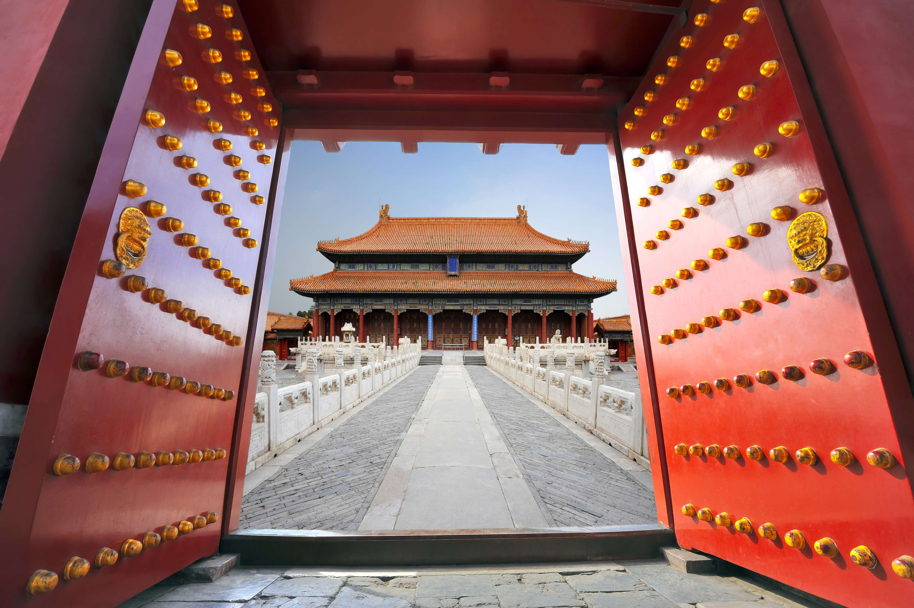

Name: People's Republic of China.
Population: 1,425,671,352.
Capital: Beijing
Official language: Mandarin
China , the world's second most populous
country, with more than 4000 years of recorded history....has a very rich culture and a flourished economy.
Other than Mandarin,
there are languages such as Yue, Wu,
Minnan, Gan, Hakka and Minbei in China.
There are other regions
in China with
different dialects.
It's said that the mortar used to bind these stones was made of sticky rice !!
In China, every year is named after one of the 12 chinese zodiac animals: Rat, Ox, Tiger, Rabbit, Dragon, Snake, Horse, Goat, Monkey, Rooster, Dog, and Pig. It is said that the luckiest year to be born in is an year of the dragon. 2023 is the year of the Rabbit.
First emperor Qin Shihuang built the city of the dead consisting of 8000 clay soldiers. It took 37 years to build it! The most amazing thing is, each of these soldiers have a unique face.
The Chinese New Year, also called Lunar New Year is celebrated for 15 days. They eat various "lucky foods" during new year. Chinese new year is celebrated in a number of other countries too.
Blood was discovered in ancient China, 2000 years before William Harvey discovered it in 1628.
Ice Cream was discovered in China 4000 years ago. Kublai Khan, founder of the Yuan dynasty, added preservatives and jam to his icy drink, and made the first ice cream prototype. They kept the production private and only accesible to the royal family!
Unlike brides around the world, Chinese brides (and the groom) wear red to celebrate their wedding.
China (and Italy) has the highest number of UNESCO sites in the world.(57 in number) One of them, the Forbidden City in China has 9000 rooms.
China builds a new skyscraper every 5 days! That's equal to 73 skyscrapers per year. It is a rapidly growing country. In 2040s, China's gdp will surpass that of the US.
The Yangzi river is the longest river in China, and also Asia. The second longest river in China, the Yellow river(Huang Ho), was the home to the ancient Huang Ho civilization. Huang means Yellow in Chinese. Makes sense right?
More than 35 million Chinese people live in caves!
Chinese Hanzi is the only surviving pictographic writing system in the world. That is still used.
There are more than 400 substyles of KungFu. It is an important part of Chinese culture. Kung Fu is not just a martial art, it is a large system of theory and practice. It refers to any study, learning, or practice that requires patience, energy, and time to complete. As Jackie Chan said, Everything is Kung Fu.
So....hope you learned some new things about China from this webpage!
It is indeed an amazing country.
If you are also a China lover,
I hope you would definitely be able to visit it ! For now, Zaijian!!!